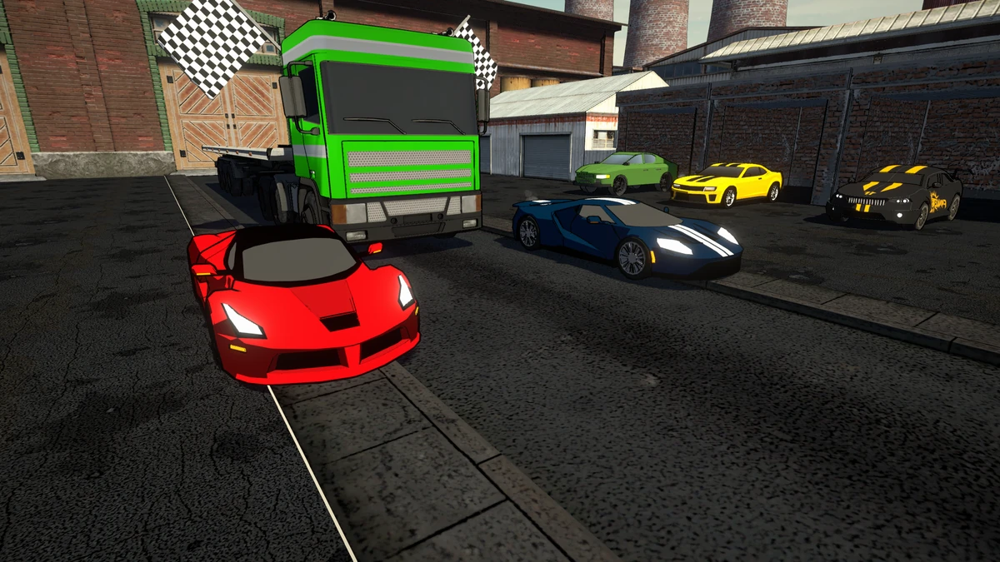
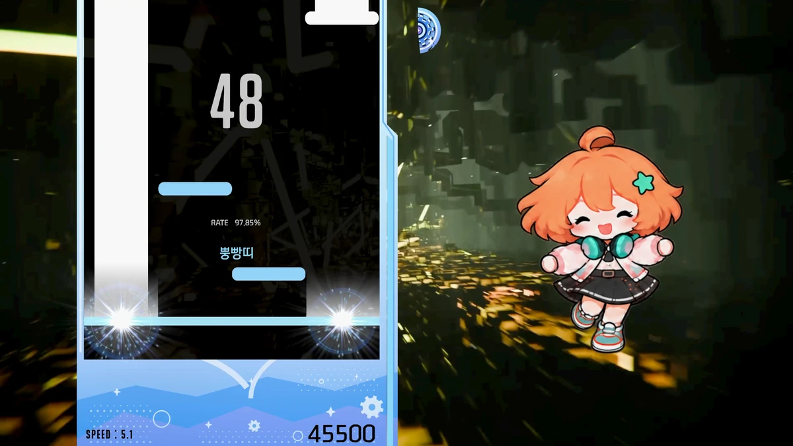

핵심을 지키며 완성합니다.
목표와 일정에 맞춰 우선순위를 정하고, 필요한 기능을 끝까지 연결합니다.
Eternal Mortis에서는 팀원들과 전투·무기·아이템·보스를 중심으로 범위를 조정해 캡스톤 전시회용 데모를 완성했습니다.
Redline Rumble에서는 주행·변속·차량 AI·경찰 추격을 연결하고, 일반 레이스와 무한 모드까지 구현했습니다.
캡스톤 우수상·itch.io 배포 / 두 가지 레이스 모드 완성
Unreal Engine과 Unity로 게임을 개발합니다.
동작의 연결부터 전투 시스템, 팀의 기능을 하나로 잇는 일까지.

안녕하세요, 박시윤입니다.
국민대학교 소프트웨어학부 / 4학년 · 현재 학점 4.39
Unreal Engine을 주력으로 게임 클라이언트 개발을 공부하고 있습니다. Unity와 Unreal Engine으로 다양한 게임을 만들며, 원하는 플레이를 구현하고 기능을 하나의 게임으로 연결해 왔습니다.
팀에서 문제가 생기면 먼저 대화하고, 함께 완성할 수 있는 범위와 우선순위를 다시 맞춥니다. 맡은 기능의 구현을 넘어, 팀원들의 작업이 게임 안에서 잘 이어지는지 살피는 개발자가 되고 싶습니다.
완성까지 가는 과정에는 구현뿐 아니라 선택과 조율이 필요했습니다. 여러 프로젝트에서 겪은 경험을 바탕으로, 다음과 같은 방식으로 일합니다.
목표와 일정에 맞춰 우선순위를 정하고, 필요한 기능을 끝까지 연결합니다.
Eternal Mortis에서는 팀원들과 전투·무기·아이템·보스를 중심으로 범위를 조정해 캡스톤 전시회용 데모를 완성했습니다.
Redline Rumble에서는 주행·변속·차량 AI·경찰 추격을 연결하고, 일반 레이스와 무한 모드까지 구현했습니다.
캡스톤 우수상·itch.io 배포 / 두 가지 레이스 모드 완성
함께 완성할 수 있는 범위를 맞추고, 서로의 기능이 연결되는 방식을 먼저 정합니다.
Section Null에서는 개발에 어려움을 겪는 팀원과 특수 좀비를 제외하기로 합의하고 이동 경로와 역할을 조정했습니다. 함수와 컴포넌트의 연결 방식을 맞춰 게임 흐름으로 통합했습니다.
Eternal Mortis에서는 초기 UML을 함께 설계하고, Subsystem의 공개 함수와 변경 이벤트를 공유해 팀원의 UI와 게임 진행 코드를 연결했습니다.
역할·범위 조정 / 함수·이벤트 기반 기능 통합
원하는 플레이를 구현하기 위해 새로운 기술을 익히고, 참고한 구조도 목적에 맞게 바꿉니다.
Concrete Ascent에서는 Motion Matching 학습을 목표로 GASP를 분석하고, Motion Warping을 활용하여 Box 기반 파쿠르 판정·매달려 이동하기를 구현했습니다.
리듬게임 프로젝트에서는 AudioSource 사용 시 판정 타이밍이 일정하지 않게 느껴져 FMOD를 조사하고 적용했습니다. 음악 재생 위치를 판정과 노트 위치 보정의 기준으로 연결했습니다.
Motion Matching·애니메이션 학습 / FMOD 조사·적용
직접 맡은 구현과 문제를 해결한 과정을 담았습니다.
자세한 기술 설명과 코드는 각 GitHub에서 볼 수 있습니다.
 UNREAL / 로그라이트 / 소울라이크
UNREAL / 로그라이트 / 소울라이크
무기와 룬의 조합으로 전투 방식이 달라지는 3인칭 액션 게임. GAS 기반 플레이어 조작과 전투를 구현하고, 락온·입력 버퍼·Motion Warping으로 전투 흐름을 다듬었습니다. 아이템과 인벤토리는 Subsystem으로 구성했습니다.
프로젝트 살펴보기 UNREAL / 3인칭 파쿠르
UNREAL / 3인칭 파쿠르
GASP를 바탕으로 이동 애니메이션을 구성하고, Box 기반 파쿠르 판정과 난간 이동, Motion Warping을 C++ 중심으로 구현했습니다.
프로젝트 살펴보기 UNITY / FPS 좀비 디펜스
UNITY / FPS 좀비 디펜스
세 지역의 감염체를 파괴하고 기지를 방어하는 FPS. 게임 진행과 기능 통합을 맡고, Animator와 사망 효과를 컴포넌트로 연결했습니다.
프로젝트 살펴보기
UNITY / 캐주얼 레이싱
UNITY / 리듬 게임